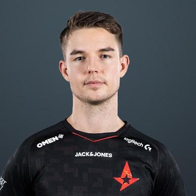

Spis treści
Opis
Nicolai „ dev1ce ” Reedtz(ur. 8 września 1995) jest duńskim profesjonalistą Counter-Strike: Global Offensive i byłym profesjonalnym Counter-Strike: Source , który obecnie gra dla Astralis jako AWPer . Jest znany jako jeden z najlepszych graczy wszech czasów, konsekwentnie grający na bardzo wysokim pod 2014 roku.
Informacje
- Imie: Nicolai Reedtz
- Data urodzenia: 8.09.1995
- Kraj pochodzenia: Dania
- Drużyna: Astralis
- Rola: AWPer
Historia
2013-01-18 – 2013-03-09 Copenhagen Wolves
2013-03-23 – 2013-06-21 heroic
2013-06-21 – 2013-09-18 Copenhagen Wolves
2013-11-04 – 2013-12-08 Copenhagen Wolves
2013-12-08 – 2014-02-16 über G33KZ
2014-02-16 – 2015-01-25 Team Dignitas
2015-01-29 – 2015-12-03 Team SoloMid
2016-01-18 – Teraz tAstralis
| Mouse Settings | ||||||
|---|---|---|---|---|---|---|
| Mouse | eDPI | DPI | Polling Rate | Sensitivity | Zoom | Raw Input |
| ZOWIE EC2 |
760 | 400 | 1000 Hz | 1.9 | 1 | On |